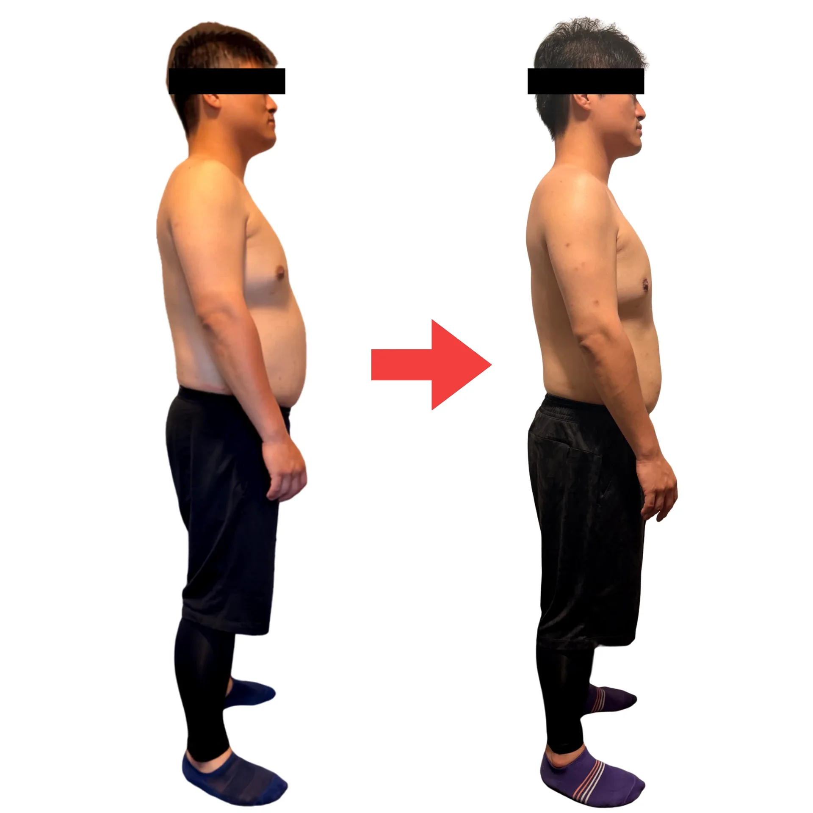

Before & After実際に通われた方の変化

姿勢
2ヶ月で、背中と首の位置が変わる
50代 男性 ／ 期間 2ヶ月
丸まっていた背中と前に出ていた頭の位置が整い、立ち姿そのものが変わりました。姿勢が変わると、同じ時間働いても夕方の身体の重さが違ってきます。

身体の変化
1ヶ月で、身体のラインが変わる
30代 男性 ／ 期間 1ヶ月
食事を極端に削るのではなく、まず身体を整えて「動ける状態」をつくることから始めました。無理なく続けられる設計にしたことが、この変化につながっています。

姿勢
2ヶ月で、立ち姿がここまで変わる
20代 男性 ／ 期間 2ヶ月
反り腰と前に出ていた頭の位置を整えました。無理に「良い姿勢」をつくるのではなく、自然に立てる状態へ導いています。
※ 掲載写真はすべてご本人の掲載許可を得ています。結果には個人差があります。